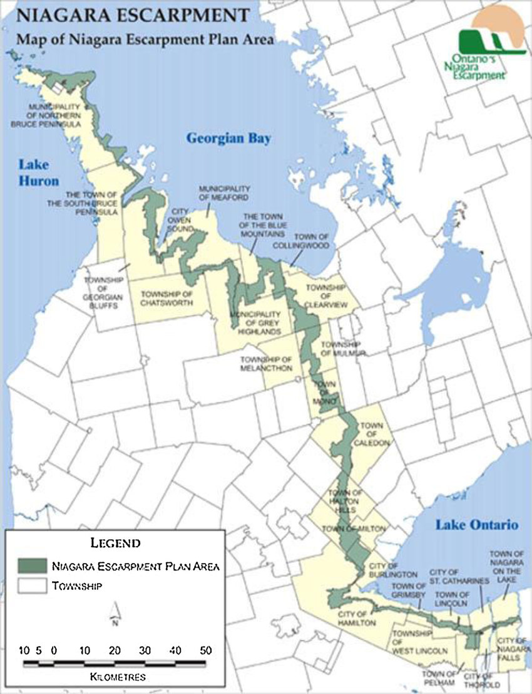
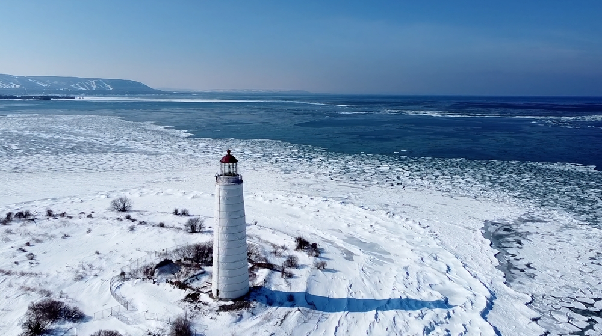
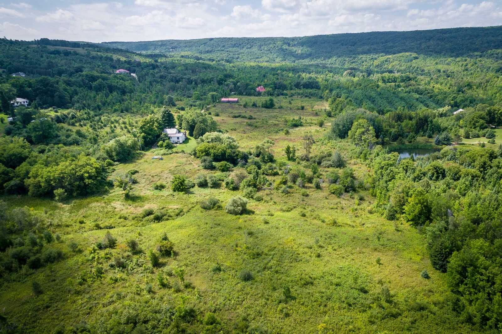
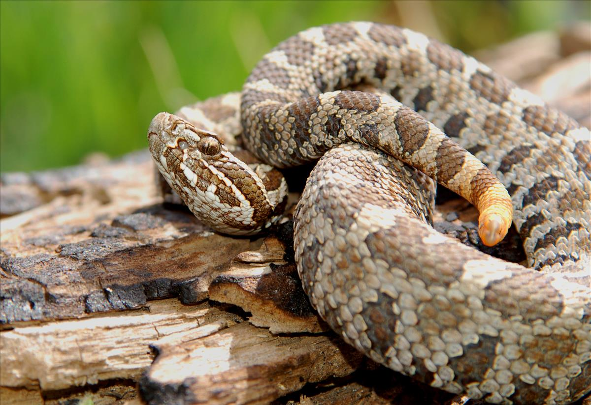
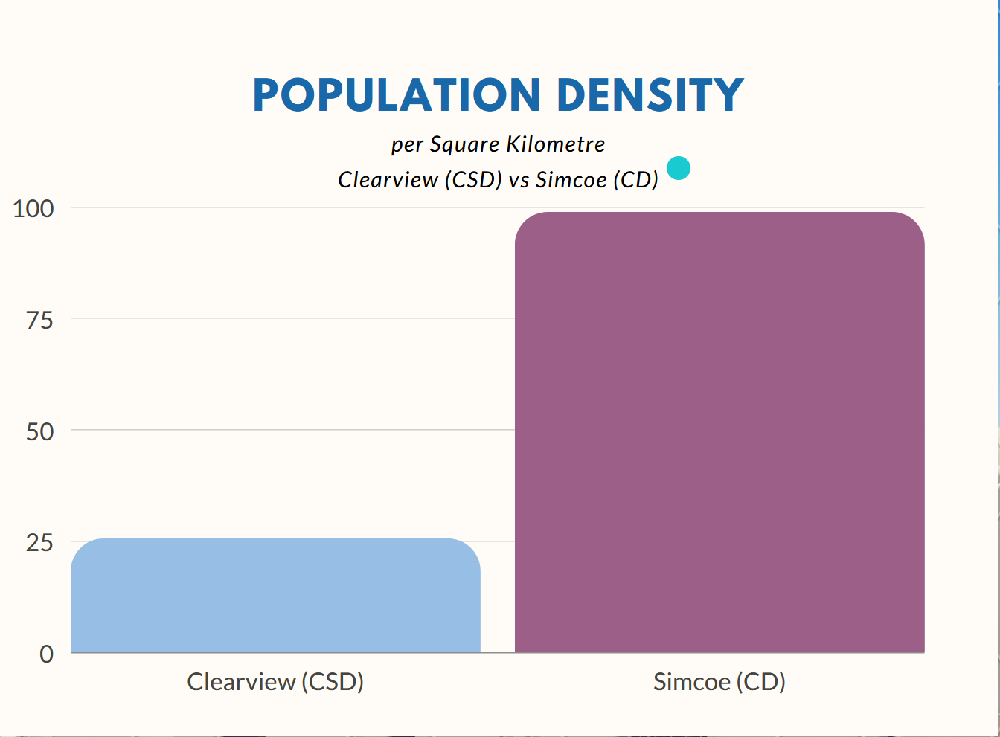
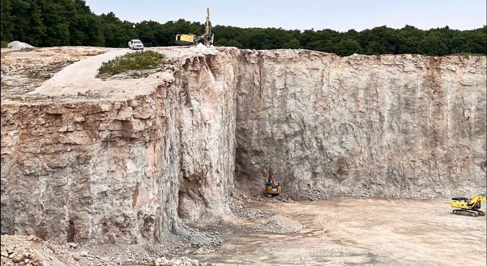

Duntroon is a small community located in the province of Ontario, Canada. Specifically, it is situated in the
southern part of the Georgian Bay area, which is part of the larger Great Lakes Basin. The community is part of
the township of Clearview, which is located in Simcoe County. Throughout this site you will notice a lot of the
information is collected from the Township of Clearview, due to the lack of information on such a small part of
the rural landscape.
Duntroon is located approximately 120 kilometers north of the city of Toronto, the largest city in Canada. It is
also situated near other notable communities such as Collingwood and Wasaga Beach, which are popular tourist
destinations due to their location along the shores of Georgian Bay and Lake Huron.
One of the most interesting features of the Duntroon area is the Niagara Escarpment, a UNESCO World Biosphere
Reserve that runs through the community. The escarpment is a prominent geological formation in the region,
characterized by steep cliffs, forests, and numerous waterfalls. In addition to the escarpment, the area is also
home to several provincial parks, conservation areas, and recreational trails, offering visitors opportunities for
hiking, skiing, and other outdoor activities.

Map of the Niagara Escarpment
Duntroon's location in Southern Ontario (Interactive Map)
Climate
Clearview Township, which contains Duntroon, has a humid continental climate, characterized by four distinct
seasons. Winters are long, cold, and snowy with average temperatures around -5°C (23°F) and occasional snowstorms.
Spring and fall are mild and relatively short with temperatures ranging from around 5-15°C (41-59°F). Summers are
warm and humid with average temperatures around 20-25°C (68-77°F) and occasional heatwaves.
In terms of precipitation, Duntroon receives an average of around 538mm (21 inches) of precipitation per year,
with rainfall occurring mostly in the summer months and snowfall occurring in the winter months. Thunderstorms are
not uncommon in the summer, and there is occasional freezing rain in the winter.
Due to its location in a region with a lot of natural beauty, Duntroon is also subject to some interesting weather
patterns such as lake-effect snow, where cold winds from the north pick up moisture from nearby Georgian Bay,
resulting in heavier snowfall in the area. Which makes it a popular destination for winter sports.

Georgian Bay in Winter Collingwoods Lighthouse and The Blue Mountains
Current Weather in Duntroon
Topography
Duntroon is located in the rolling hills of the Niagara Escarpment in Ontario, Canada. The area is characterized
by a mix of forested areas, fields, and rocky outcroppings. The nearby Blue Mountains and the Niagara Escarpment
provide the area with beautiful natural scenery, including hiking trails, waterfalls, and rocky cliffs.
The Blue Mountains are a popular destination for winter sports enthusiasts, with ski resorts in the area. There
are multiple rivers that flow through the area, providing opportunities for fishing. With the lake in the summer
providing oppurtunities for even more water-based activities. Notable landmarks in the area include the Devil's
Glen Provincial Park, which offers hiking trails and cross-country skiing, and the Nottawasaga Lookout Provincial
Park, which provides stunning views of the surrounding area.
The area is also known for its apple orchards and cider mills.

Pretty River Valley pictured from Pretty River Road
Flora and Fauna
Duntroon has a mix of plant and animal life common to the area. The natural habitats in and around the community
provide suitable conditions for a variety of wildlife species. The region has both coniferous and deciduous
forests, with a mix of maple, birch, and pine trees.
Common plant species found in the area include Eastern white pine, sugar maple, yellow birch, and red oak. The
forests are also home to various types of ferns, mosses, and lichens.
The region is home to many wildlife species, including white-tailed deer, moose, black bears, coyotes, and wolves.
Smaller animals such as chipmunks, squirrels, raccoons, and skunks are also common in the area. There are also
several bird species that can be found, including bald eagles, red-tailed hawks, and wild turkeys.
There are a few unique species found in the region, such as the Massasauga Rattlesnake, which is an endangered
species in Ontario. The Georgian Bay region is also known for its fish populations, with many species of trout,
salmon, and bass found in the nearby lakes and rivers.

Endangered Species: Massasauga Rattlesnake
Population
Due to lack of information, I will be focusing on Clearview Township for Population information. Duntroon is
located within Clearview Township, which is part of Simcoe County. Clearview Township has a population of 14,151,
with a population density of 25.4 people per square kilometer. The average age of the township is 42.6 years,
which is slightly higher than the national average of 40.9 years.
In terms of demographic information, Clearview Township is predominantly white, with 95.4% of the population
identifying as such. The remaining 4.6% of the population identifies as belonging to other ethnic groups. The most
common non-official languages spoken as mother-tongues in the area are German, Dutch, Italian, Polish, and
Portuguese, the first two can be attributed to the large Mennonite population in the area.
The average income in Clearview Township is $45,144 per year, which is slightly lower than the national average.
Meanwhile in The Blue Mountains located just to the west and north, the average income is $64,394 per year.
As for notable features of the population, it is worth noting that only about 25-30% of the population are school
age (Primary School, High School, or University/College). The remaining 70-75% of the population is comprised of
adults, many of whom work in the agricultural and tourism industries that are prominent in the area. The Mennonite
population in the area is also significant and has contributed to the cultural and linguistic diversity of the
community.
In summary, Duntroon is a small community within Clearview Township, which is a predominantly white and rural area
with a relatively high average age and a significant Mennonite population. The area is characterized by its
agricultural and tourism industries.
Age of Clearview Township and Simcoe County's Population

Population Density of Clearview Township and Simcoe County
Duntroon, which is located in Clearview Township, is a community that is heavily influenced by the local agricultural industry. Similar to the rest of Clearview Township, Duntroon's primary crops include soybeans and corn, along with ciderys/orchards. As part of Clearview Township's economic development plan, there has been a push to diversify crops into more specialized markets, such as micro-herbs and cannabis. In fact, Duntroon may also benefit from the presence of two major Health Canada cannabis producers, Agripharm Corp. and the Peace Naturals Project, which are located in Clearview Township.
Apart from agriculture, Duntroon also taps into the tourism industry, which is primarily focused on the nearby town of Creemore, Hiking/Biking trails, and The Blue Mountains area. Creemore's bustling business improvement area features a number of local businesses, including art stores, cafes, and restaurants, which may provide opportunities for Duntroon's small businesses to expand and attract more visitors. Additionally, Creemore Springs Brewery, Ontario's oldest craft brewery, is also located nearby and may provide potential partnership opportunities for Duntroon's local businesses.
According to Canadian census data, Clearview Township's population is largely composed of working-class individuals. The average household income in Clearview was $68,998 in 2016, and the employment participation rate was at 67%.
Additionally, approximately 50% of the population did not complete high school or any post-secondary education. Amongst employed citizens of Duntroon, the top 3 industries were manufacturing, agriculture, and construction. However, with the economic impact of the COVID-19 pandemic, many small businesses in Duntroon have been affected, resulting in closures and/or heavy restrictions on business operations. Support for small businesses affected by the pandemic was provided through the Clearview COVID-19 Community Assistance Fund, which may have helped alleviate some of the economic damage experienced by Duntroon's small businesses.
With mandates now largely lifted, Duntroon may look to revamp economic growth in the area. Duntroon may consider expanding its agricultural sector by diversifying its crop offerings or exploring new farming techniques.
Moreover, Duntroon may also seek to attract more tourists by promoting its local businesses and attractions, such as hiking trails or scenic views. Lastly, Duntroon may also colaborates with nearby communities, such as Creemore, Wasaga Beach, and The Blue Mountains, to create a more robust regional economy that benefits all of Clearview Township and the surrounding areas.

Duntroon Quarry Located less than a Kilometre to the West of the town